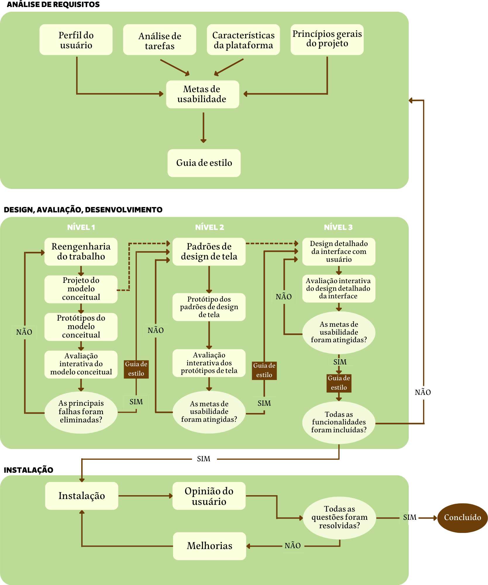

Processo de Design
Existem diversas propostas de processos de design dentro da literatura de IHC, em que todas elas possuem as seguintes etapas em comum: análise da situação/identificação do problema, proposta de intervenção para os problemas identificados e avaliação dessa intervenção. A diferença entre cada processo de design está na forma que essas atividades básicas serão realizadas.
Um fator inerente aos processos de design é a iteratividade na execução das atividades: sempre que necessário, o designer pode recorrer às etapas anteriores do processo. Exemplificando, quando o designer está projetando uma intervenção para um problema identificado, ele é livre para retornar à etapa de análise de situação para refinar a sua proposta. Essa revisão da análise é muito importante para a elaboração de uma proposta de intervenção coerente.
Também é dado destaque à importância de ter os usuários envolvidos nas atividades de design, pois quanto mais a opinião de usuários for ouvida, mais será possível entender sobre as suas necessidades reais, ajudando na identificação e correção de problemas. (BARBOSA, 2021)
Algumas das propostas de processo de design são o ciclo de vida em estrela, o ciclo de vida para engenharia de usabilidade de Mayhew, o design contextual, o design baseado em cenários e o design dirigido por objetivos.
-
Ciclo de vida em estrela: His e Hartson desenvolveram o ciclo de vida em estrela em 1993, tendo sido um dos primeiros ciclos de vida de IHC. Esse processo de design possuí 6 atividades: implementação; prototipação; projeto conceitual e especificação do design; análise de tarefas, usuários e funções, especificação de requisitos; e, por fim, a avaliação. Nesse ciclo de vida o designer tem liberdade de decidir qual a atividade a ser realizada primeiro.
-
Ciclo de vida para engenharia de usabilidade de Mayhew: esse ciclo de vida foi desenvolvido por Deborah Mayhew em 1999 e possui 3 fases: análise de requisitos, design/avaliação/desenvolvimento e instalação e é conhecido por sua visão panorâmica do processo.
-
Design contextual: o design contextual foi elaborado por Beyer e Holtzblatt em 1997 e busca o entendimento das necessidades dos usuários através de uma inverstigação do contexto de uso.
-
Design baseado em cenários: esse design usa cenários que representam as atividades envolvidas em uma solução de IHC e foi desenvolvido por Rosson e Carroll em 2002. Geralmente os cenários contam com a contribuição de todos os interessados no sistema.
-
Design dirigido por objetivos: esse processo de design incentiva o designer a utilizar as tecnologias da melhor forma possível, com o objetivo de chegar em soluções criativas, inovadoras e eficientes. Esse design foi desenvolvido por Alan Cooper, Robert Reimann, David Cronin, e Christopher Noessel.
Engenharia de Usabilidade de Mayhew
 Figura 1 - Ciclo de vida para a engenharia de usabilidade (BARBOSA, 2021).
-
Análise de requisitos: definição das metas de usabilidade, levando em conta o perfil dos usuários, análise das tarefas, possibilidades e limitações da plataforma em que o sistema será executado e princípios gerais de design de IHC.
-
Design, avaliação e desenvolvimento: busca chegar em uma solução de IHC que atenda às metas de usabilidade que foram definidas na fase de análise de requisitos.
-
Instalação: coleta de opiniões dos usuários após um certo tempo de uso. As informações coletadas serão utilizadas para melhorar o sistema ou até mesmo desenvolver novos sistemas interativos.
Por que usar o ciclo de vida de Mayhew?
Aplicando a Usabilidade de Mayhew na avaliação do site
Bibliografia
Barbosa, S. D. J.; Silva, B. S. da; Silveira, M. S.; Gasparini, I.; Darin, T.; Barbosa, G. D. J. (2021);Interação Humano-Computador e Experiência do usuário.
Beyer, Hugh e Holtzblatt, Karen (1997). Contextual Design: Defining Customer-Centered Systems. Morgan Kaufmann Publishers Inc., San Francisco, CA, USA.
Mayhew, D. Th e Usability Engineering Lifecycle: a practitioner’s handbook for user interface design. San Francisco, CA: Morgan Kaufmann, 1999.
Tabela de Versionamento
| Data | Versão | Descrição | Autor | Revisor |
|---|---|---|---|---|
| 04/07/2022 | 0.1 |
Criação do tópico Processo de Design | Clara Ribeiro | Matheus Perillo |
| 04/07/2022 | 0.2 |
Adição da legenda na imagem | Clara Ribeiro | Matheus Perillo |
| 07/07/2022 | 0.3 |
Correção de bugs na documentação | Matheus Perillo | Clara Ribeiro |
| 07/07/2022 | 0.4 |
Adição de justificativa para processo escolhido | Rafael Xavier | Natan Santana |
| 19/07/2022 | 0.5 |
Adição do resumo de outros processos de Design | Clara Ribeiro | Natan Santana |